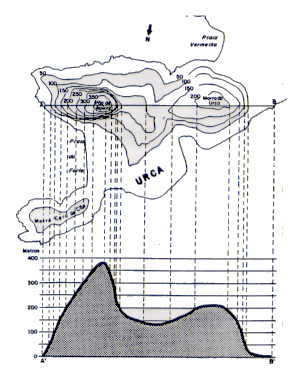
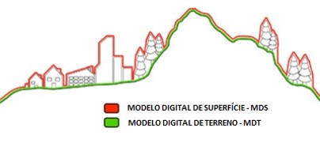

DADOS,
VIA,
MDE,
TIN.
DADOS
As amostras foram agrupadas de modo simples e aleatório e foram obtidos a partir de imagem
SRTM com dados de altitude do site topodata do INPE. Já o SIG utilizado para retirada
das amostras foi o Qgis.
Cabe ressaltar que para se carregar os dados é necessário clicar no botão de carregamento
e escolher a cidade com os seus respectivos pontos de altitude, de modo que é necessário carregar os
dados sempre que a localização do usuário mudar para outra cidade.
VIA
De acordo com o Instituto Brasileiro de Geografia e Estatística (
IBGE ), o perfil é a representação em termos cartográficos de uma seção vertical da superfície terrestre. Assim,
inicialmente precisa-se conhecer as altitudes de um determinado número de pontos e a distância entre eles. A Figura 1
abaixo mostra a representação do perfil topográfico de acordo com uma seção traçada entre as curvas de nível:

Fonte-imagem: IBGE
Como é gerado o Perfil aqui?
A ideia aqui é a geração da seção do perfil através do caminho percorrido pelo usuário por meio de suas coordenadas,
estas são fornecidas a cada 30 segundos pelo sistema de posicionamento do despositivo. Assim, ao se carregar a
base de dados previamente (ver explicação em DADOS) e clicar no botão
,
o usuário saberá qual foi a altitude de seus pontos de localização em comparação com a distância percorrida.
MDE
O que é MDE, MDS e MDT?
O serviço de Pesquisa Geológica dos Estados Unidos (do ingles: United States Geological
Survey
- USGS ) nos informa sobre as diferenças entre algumas modelagens de terreno
do seguinte modo:
- O Modelo Digital de Elevevação ou MDE (do inglês: Digital Elevation Model - DEM) é uma
é uma representação do terreno (terra nua) com elevações em intervalos regularmente espaçados;
- Um Modelo Digital de Superfície ou MDS ( do inglês: Digital SurfaceModel - DSM)
também contém elevações em intervalos regularmente espaçados, contudo as elevações representam
a primeira superfície refletida detectada pelo sensor, assim, esses primeiros retornos podem
ser refletidos pelo solo nu ou por características da superfície, como árvores e estruturas.
No Brasil, de acordo com
Anderson Medeiros, utlizamos o conceito do MDE e MDT (Modelo Digital de Terreno,
ou do inglês: Digital Terrain Model - DTM) como sinônimos.
A Figura 2 a seguir ilustra a diferença entre os modelos DTM e DSM:

Fonte-imagem: tecterra.com.br
TIN
O que é ?
Segundo Neeraj
Bhargava, Ritu Bhargava e Prakash Singh Tanwar (2013) , a Rede Triangular Irregular
(do inglês: TIN – Tringular Irregular Network ), baseada em vetor, nada mais é do que um
modo de representar uma superfície derivada de pontos de amostra espaçados irregularmente
e recursos de linha de quebra.
Como é gerado o TIN aqui ?
Em conjunto com a localização do usuário é gerado o TIN em duas dimensões (2D) e depois em três dimensões (3D),
isto ocorre ao se clicar previamente no botão de carregamento (ver explicação em DADOS) e depois no botão com simbologia
de alvo
. Depois de um tempo a operação de retirada de amostras da base de dados é explicada em conjunto com o carregamento
das camadas no mapa, de modo que após alguns segundos o usuário pode ver o gráfico em três dimensões (3D) de sua
localidade ao ir na aba TIN 3D.
Ressalta-se que os pontos de amostra retirados são advindos de um buffer que terá em média o mesmo tamanho, de modo
que a Rede Triangular Irregular, tanto em 2D como em 3D, terá o ponto de altitude mais distante a 300m de distância
da localização do usuário.